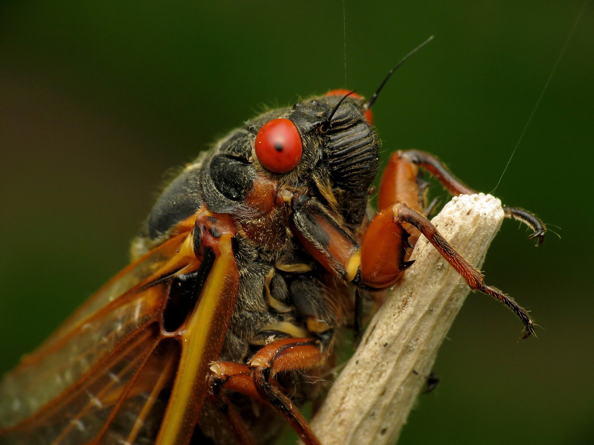
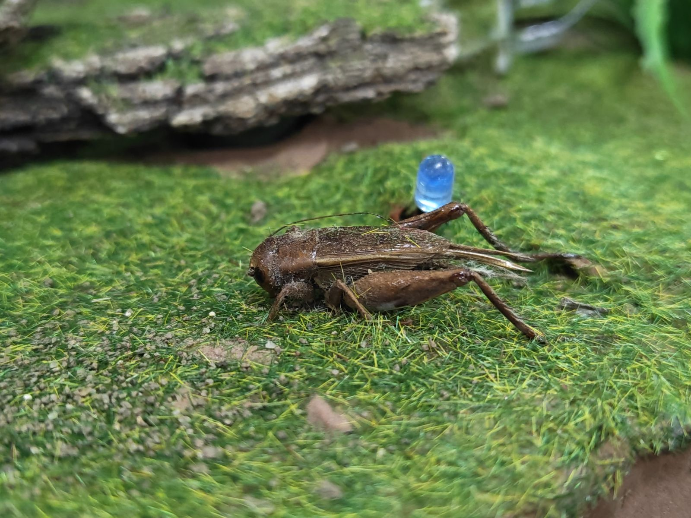
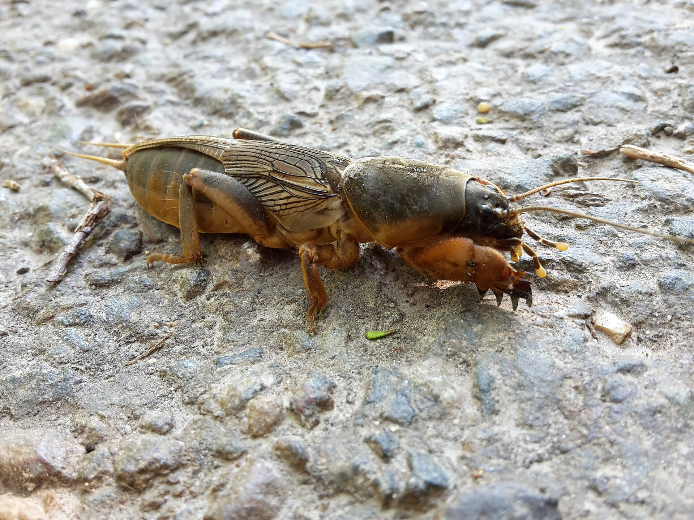
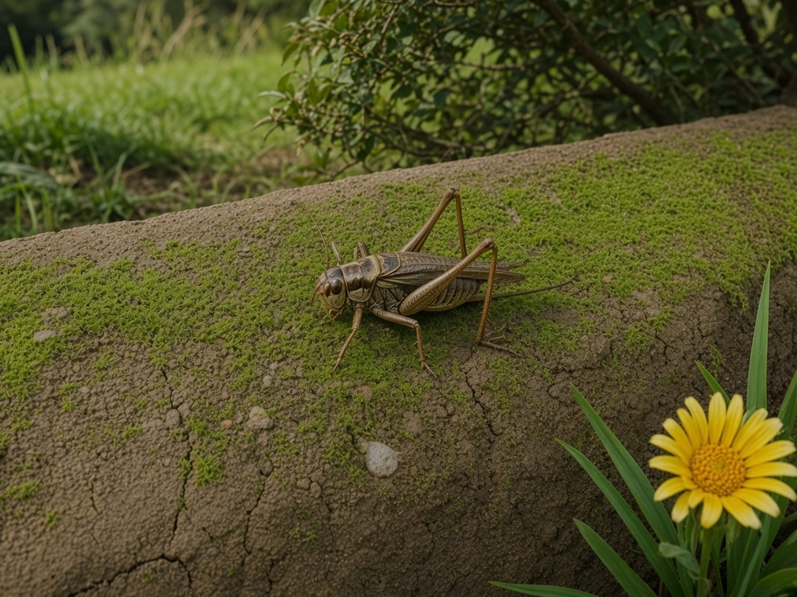
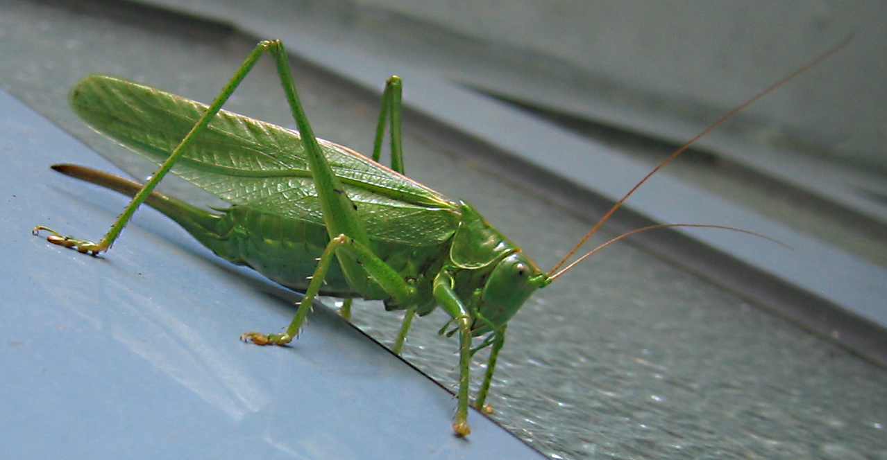
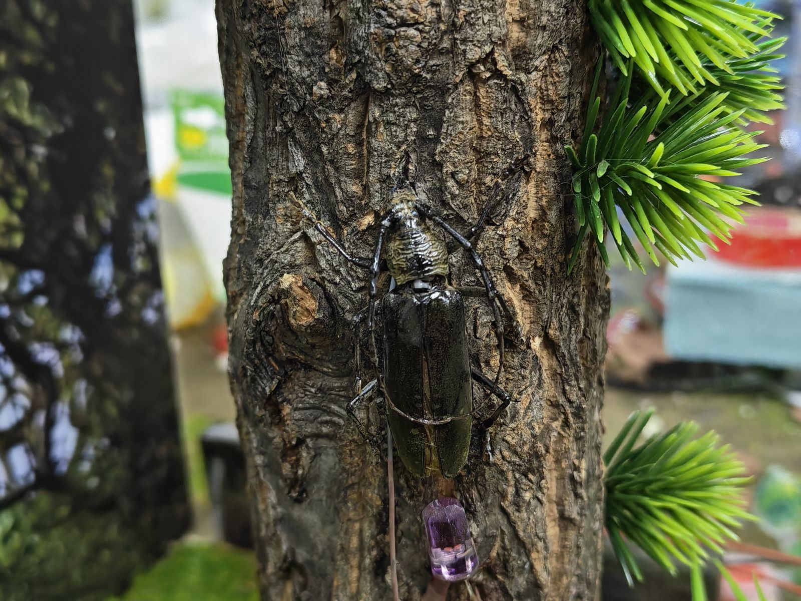
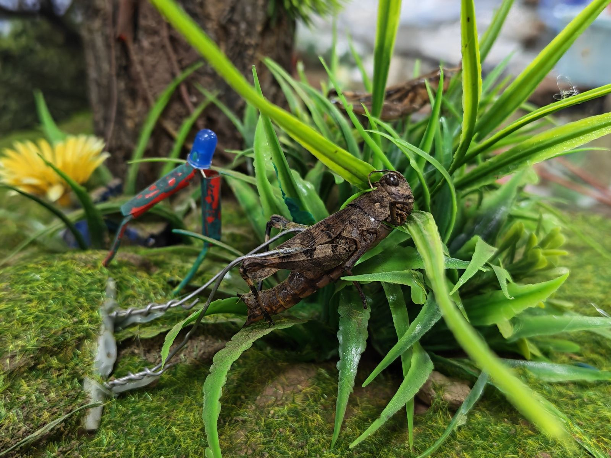

01
蝉
盛夏正午的主音。雄蝉鼓膜高频颤动，把树冠变成一整片声场。

02
蟋蟀
夜草间的细鸣。前翅摩擦起振，像一根被轻轻拨动的弦。

03
蝼蛄
地下生活的歌唱者。洞口共鸣把叫声送出地面，低而绵长。

04
螽斯 · 昼
白天草丛里的清越颤音，翅脉摩擦如细弦。

05
螽斯 · 夜
入夜后音量与节律都会变。匣里给了它更大的夜鸣姿态。

06
天牛
树干上的厚重摩擦音，短促而有力，像木头被轻轻锯开。

07
蝗虫
翅与腿的弹振声。田间常见，却少被认真「听」过。
扫码听一声
展台上的二维码打开操控页。点某一只，就只亮它的灯、放它的叫声。有人正在听时，后来的会自动排队。
打开操控页 · 安卓 Chrome / 电脑 Edge · 热点仍是 7MingXia